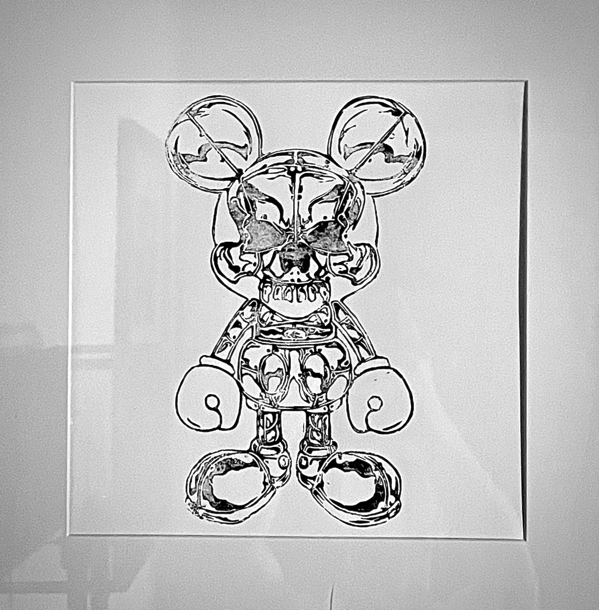
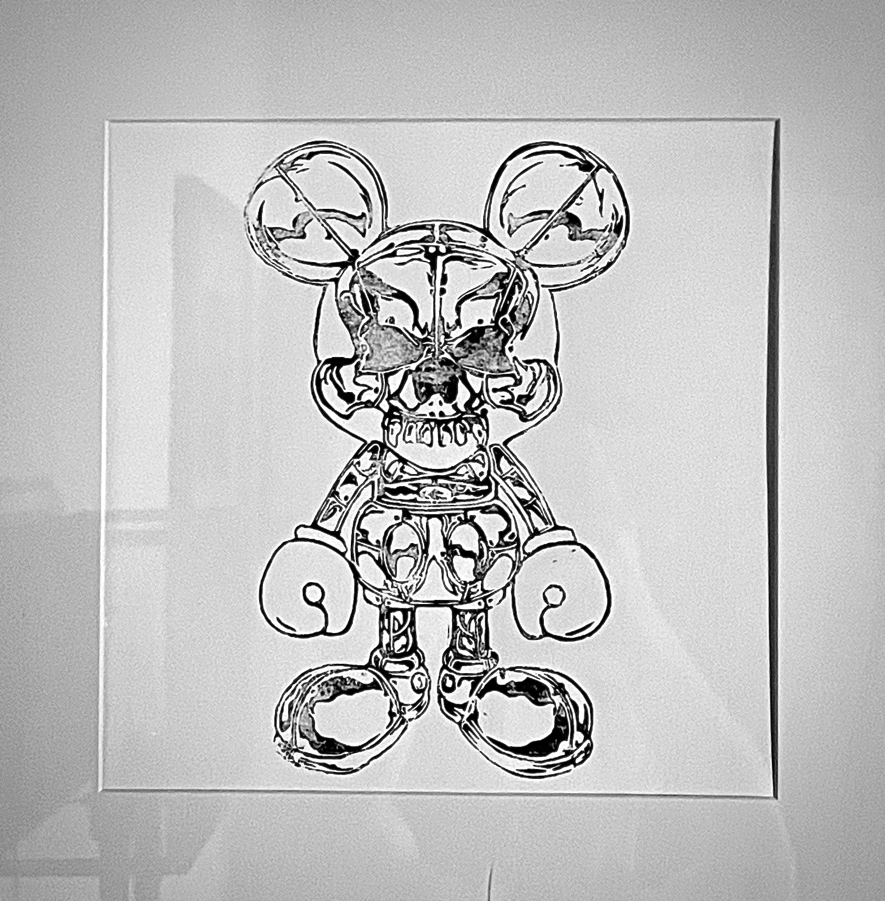

Digital
I created these vector images using Adobe Illustrator while studying Multi-Media Design at Raffles - College of Design - Sydney.
Sculpting
I'm a self-taught sculptor and prosthetic designer. I learned the art of prosthetics via online research and by watching some free online video tutorials.
Wood-Craft
These are some of my wood-work projects that I designed and built. I hold a strong interest in lighting design, so I often incorporate this into my personal projects where I see fit.


Lyno Art
I began to explore my artistic side in 2007. These were some of the first pieces of art that I made.

 
